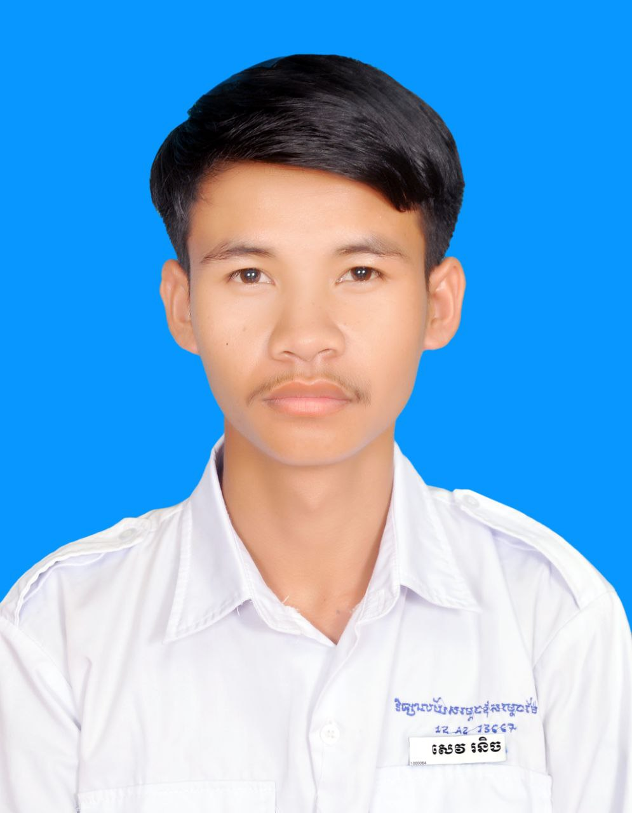

ជីវប្រវិត្តិសង្ខេប
ព័ត៌មានផ្ទាល់ខ្លួន

គោត្តនាម-នាម: សេវ រនិច
អក្សរឡាតាំង: SEV RONICH
ភេទ: ប្រុស
ថ្ងៃខែឆ្នាំកំណើត: 11/02/2005
ទីកន្លែង: ភូមិសោមគល់ឃុំសោមធំស្រុកអូយ៉ាដាវខេត្តរតនគិរី
លេខទរស័ព្ទ: +855 976987608 អ៊ីម៉ែល: sevronich999@gmail.com
ប្រវិត្តិចំណេះដឹងទូទៅ
2012-2025:សញ្ញាប័ត្រទុតិយភូមិ
វិទ្យាល័យ: វិទ្យាល័យសោមធំ
កម្រិតសិក្សា: សញ្ញាប័ត្រទុតិយភូមិ
2025-2030: បរិញ្ញាប័ត្រ
2025-2026:ឆ្នាំទី1
Introduction to Information and Technolgoy
Programming Fundamental
Intensive English Program I
Academic Skill Development
Multimedia and Web Design
Networking Fundamental
Web Development I ( Web Design )
Data Structure and Algorithm
Database Management Systems
Intensive English Program II ( For IT Researching )
Mathematics ( Discrete Math )
System Administration
2025-2026:ឆ្នាំទី2
Application Security ( Cybersecurity )
Web Development II ( Java, Spring Framework )
Computer Organization and Architecture
Object Oriented Analysis and Design
Mathematics II ( Business Statistic )
Web Development III ( Full Stack Web Development )
UX and UI Design Professional
Project Management
Project Practicum ( Internship )
2025-2027:ឆ្នាំទី3
Database Administration (DBA)
Ethical Hacking ( Cybersecurity )
Data Analytics
Python for Data Analytics
Application Development I ( .NET Framework )
Mobile Development I
Mobile Development II
Linux System Administration
DevOps Engineering
Application Development II ( .NET Framework )
Soft Skill ( Career Preparation, Teamwork, Interpersonal )
2025-2028:ឆ្នាំទី4
Fundamental of Machine Learning
Fundamental of Artificial Intelligence
Software Engineering
Microservices Architecture ( Spring Framework )
Application Integration with AI
Research Methodology ( How to write thesis statement )
Internship ( Project Practicum II )
សញ្ញាប័ត្រដែលទទួលបាន
{COPYRIGHT} By SEV RONICH
{EMAIL}: sevronich999@gmail.com